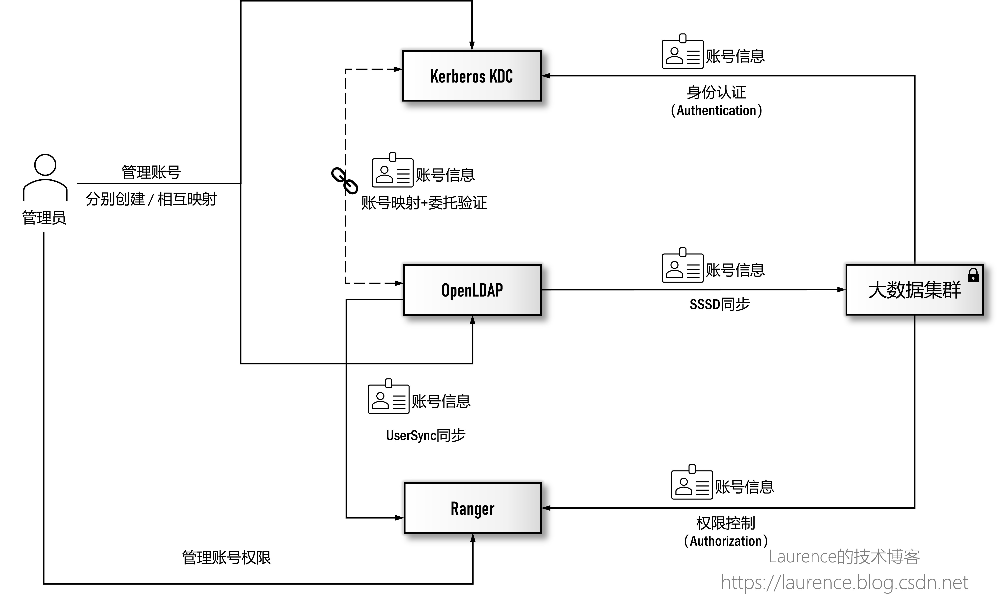
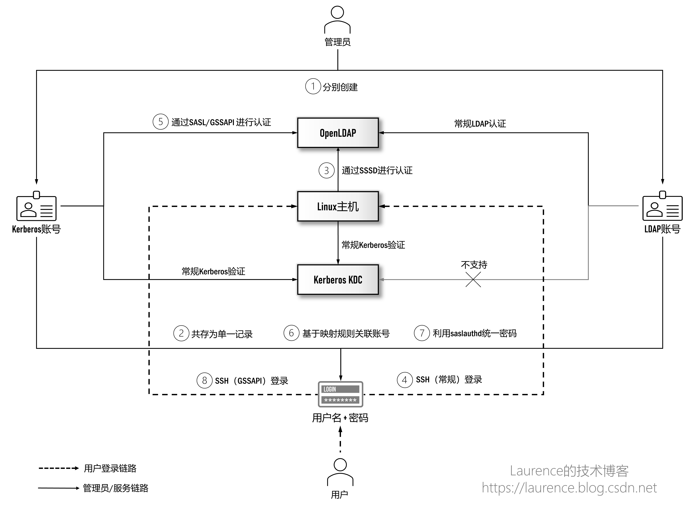
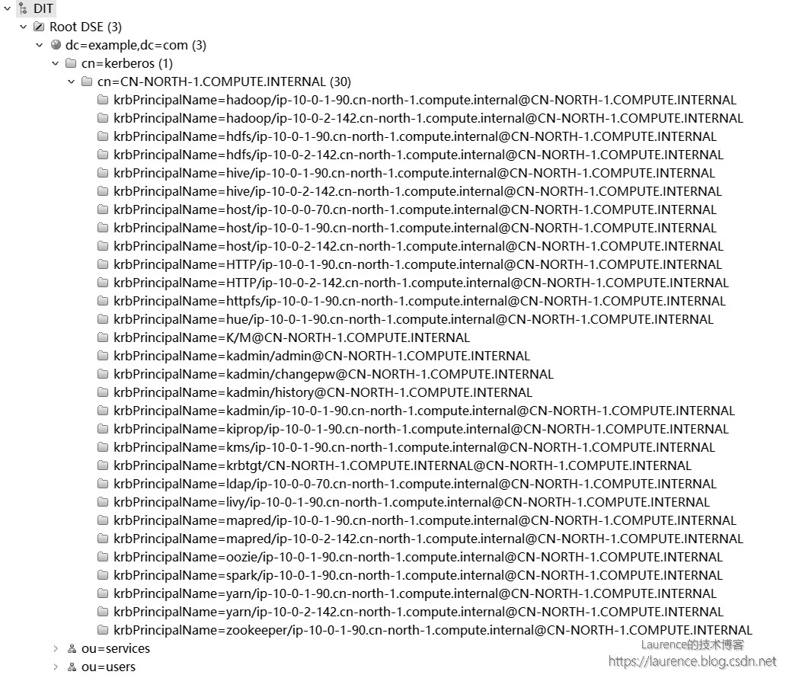
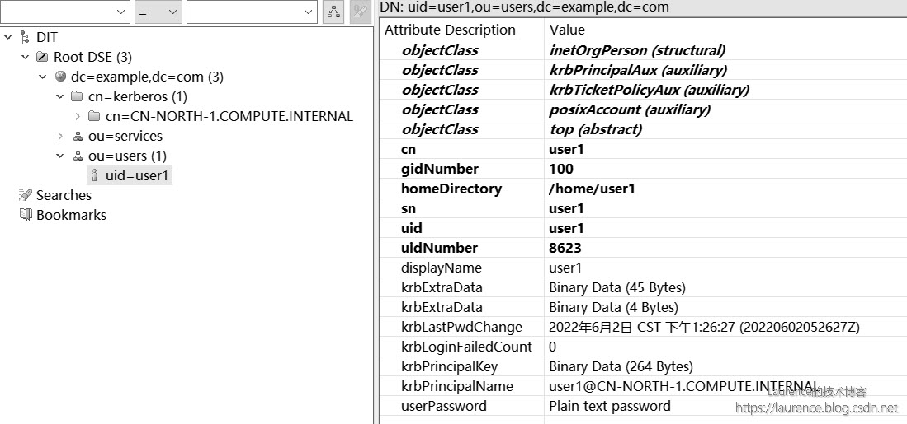

集成 OpenLDAP 与 Kerberos 实现统一认证 (1)：整合后台数据库
1. 写作背景
写作本系列文章的背景是我们要在大数据平台/企业数据湖场景下给出中心化的用户身份认证方案。此前，我们实现过Windows AD + Kerberos的集成方案，由于Windows AD是LDAP和Kerberos的双重实现，这种天然优势使得Windows AD可以实现真正意义上的（大数据集群的）Kerberos账号与企业用户账号的统一管理。当我们想在OpenLDAP + Kerberos上实现同样的目标时，发现这一领域的知识与方案琐碎而凌乱，缺少统一连贯，脉络清晰的讲解，在经过大量技术调研和系统梳理后，我们特别撰写了本系列文章，希望可以借此将这一话题全面彻底地阐述清楚。本系列由三篇文章组成，将沿着“如何集成OpenLDAP与Kerberos实现统一认证管理”这一主线推进，在实现过程中会详细介绍使用到的技术和原理并给出完备的执行脚本用于实际环境的搭建。我们假设读者已经具备OpenLDAP和Kerberos的基本知识，不再对两者进行单独介绍。此外，本系列文章写作期间正值2022年4月-5月上海疫情最严重的时期，特以此文纪念这段艰难的特殊时光。（本文发表于作者技术博客，原文链接： https://laurence.enlightgram.com/security/openldap-kerberos-1-backend-database/ ）
2. 既定目标
系统安全有两个重要领域：身份认证和权限管理，前者要解决“系统里有没有这个人？”的问题，后者要解决“他有没有权限执行某项操作？”的问题。在大数据领域，权限管理一般由 Apache Ranger负责，这是一个与众多大数据组件均有集成的权限管理工具（由于众所周知的原因，另一款工具Sentry的前景已经非常暗淡），但是在身份认证方面，情况则有一些复杂：一方面，很多企业都建立了以Windows AD或OpenLDAP为代表的中心化账号管理基础设施，各IT系统通常都需要与之对接，以便实现统一的身份认证，大数据平台/数据湖作为企业IT生态的一部分，也不例外。但是，在大数据生态圈里，最被广泛支持的认证机制其实是Kerberos，虽然有部分组件（如HiverServer2，Hue等）也支持LDAP，但是普及程度远不如Kerberos，如果仅针对大数据平台/数据湖建立一套统一认证机制的话，Kerberos几乎是唯一的选择。于是，一个很直接的问题就摆在了面前：如何将OpenLDAP与Kerberos对接，把大数据平台/数据湖的身份认证统一到企业的中心化认证服务上？
下图描绘的就是集成OpenLDAP与Kerberos后，大数据集群/企业数据湖进行用户身份认证和权限控制的全景视图：

在这个生态系统架构中，OpenLDAP作为企业全局的用户认证中心独立于大数据集群存在；Kerberos KDC作为大数据集群的身份认证中心，既可以是集群专属的，也可以是一个独立于集群的全局KDC（如果存在的话），管理员会为用户在Kerberos和OpenLDAP上分别创建账号，然后通过一系列技术将两套认证系统的账号打通；大数据集群的各个节点通过SSSD与OpenLDAP对接后，用户可以凭借LDAP账号（准确地说是账号中的用户名）登录集群的各个节点。在Kerberos和OpenLDAP账号打通的前提下，用户还可以使用同一账号完成Kerberos认证，进而可以提交作业或访问大数据相关服务；Ranger负责集群用户的权限管理，其账号数据同样来自于OpenLDAP。这样，OpenLDAP、Kerberos和Ranger三方的用户数据一致，就可以实现统一的用户认证和权限管理了。
在展开介绍OpenLDAP与Kerberos的集成方案前，需要读者清楚提前接受这样一个事实：OpenLDAP与Kerberos作为两套独立的认证系统，是无法做到绝对意义上的统一的，这一点随着后续的深入介绍，读者应该会有所体会。但是在实际应用中，由于绝大多数以OpenLDAP和Kerberos作为用户认证源的外围系统通常只验证或同步两系统账号中的“用户名”部分，即OpenLDAP账号中的uid部分和Kerberos账号中的Principal Name（(@前面的）)部分，这为统一两个认证系统的账号创造了可利用的外部条件，只要我们能将两套账号的用户名部分和密码统一在一起，就可以达到“使用效果”上的账号统一，这是目前各类技术方案之所以可行的一个重要支点。
下面就是本系列文章给出的集成OpenLDAP与Kerberos的整体方案，也是接下来三篇文章的技术路线图：

这个方案涉及OpenLDAP和Kerberos KDC两个身份认证源（两台 服务器 ）；Linux主机代表大数据集群的各个节点，由于其需要与OpenLDAP和Kerberos KDC进行通信，所以每一个Linux主机同时也是OpenLDAP和Kerberos KDC的客户端（客户端的安装会在后续章节中介绍）；参与人员有管理员和用户。方案整体的工作机制如下：
①：管理员会为用户创建Kerberos和OpenLDAP两个配套账号，并保证两个账号中的用户名部分相同。用户并不需要区分和记忆这两个账号，实际上，管理员只需要将两账号中相同的用户名部分和一个密码发送给用户即可，作为用户，只需要知道自己的用户名和密码即可（至于在登录过程中走的是OpenLDAP认证还是Kerberos认证，对用户来说其实是透明的）；
②：将Kerberos的后台数据库迁移到OpenLDAP上，并将用户在这两个系统上的配套账号统一存储为一条记录（LDAP Entry）；
③：配置并启用SSSD，允许Linux主机（大数据集群各个节点）通过SSSD连接到OpenLDAP进行账号认证；
④：完成上述操作后，用户就可以使用自己的用户名和密码以常规的SSH方式登录Linux主机（大数据集群各个节点）了，此时，用户的身份认证链路是：用户 -> Linux主机 -> OpenLDAP；
⑤：配置SASL/GSSAPI，赋予Kerberos账号登录OpenLDAP的能力；
⑥：配置OpenLDAP的账号映射规则，将Kerberos账号映射到目标OpenLDAP账号上，实现“账号（用户名）统一”；
⑦：配置saslauthd，让OpenLDAP委托Kerberos验证密码，实现“密码统一”；
⑧：完成上述操作后，用户就可以使用自己的用户名和密码以GSSAPI方式SSH登录Linux主机（大数据集群各个节点）了，在登录的同时还将自动完成Kerberos认证，为提交大数据作业铺平了道路，此时，用户的身份认证链路是：用户 -> Linux主机 -> Kerberos KDC；
我们将在第一篇文章完成第①、②两步操作；在第二篇文章完成第③、④步操作；剩余的第⑤、⑥、⑦、⑧四步操作将在第三篇文章中完成。其他未标记数字的操作均为常规机制，无需额外配置。
3. 环境说明
为了更好地说明和演示，我们将在一套真实环境上执行各项操作，这套环境将贯穿整个系列文章，以下是实操环境的各项信息：
※ 提示：以下环境信息（主机名，账号等）将会频繁出现在脚本中，如果读者要进行实操，建议将文章拷贝至文本编辑器，然后根据自己的实际环境，统一查找并替换相关的信息项。其中，只有OpenLDAP和Kerberos KDC的主机名是每次安装必须替换的项，其他项可视需求自行调整。
- 主机信息
| 角色 | 主机名 | 操作系统 |
|---|---|---|
| OpenLDAP | ip-10-0-0-70.cn-north-1.compute.internal | Amazon Linux 2 |
| Kerberos KDC | ip-10-0-1-90.cn-north-1.compute.internal | Amazon Linux 2 |
| 大数据集群各个节点 | 操作中无需引用节点主机名进行配置，故省略 | Amazon Linux 2 |
大数据集群通常由多个节点组成，由于后续操作没有需要显示配置或使用节点主机名的地方，所以在此省略。但是读者需要注意的是：后续文章中凡标记需在[ 大数据集群各个节点 ] 上执行的操作，均需逐一登录集群各个节点重复执行相关操作。此外，从OpenLDAP和Kerberos KDC的视角看，大数据集群的每一个节点同时也是一个OpenLDAP和Kerberos的客户端。
※ 备注：本系列文章的所有操作均在 Amazon Linux 2上测试通过，原则上同样适用于CentOS/RHEL 7.0+
- OpenLDAP环境
| 项目 | 取值 |
|---|---|
| Base DN | dc=example,dc=com |
| Root DN | cn=admin,dc=example,dc=com |
| 版本 | 2.4.44 |
- OpenLDAP账号
| USER/SERVICE | 密码 | 说明 |
|---|---|---|
| cn=admin,dc=example,dc=com | Admin1234! | OpenLDAP Root DN |
| uid=user1,ou=users,dc=example,dc=com | Admin1234! | 测试用的普通账号 |
| cn=sssd,ou=services,dc=example,dc=com | Admin1234! | 分配给SSSD的Bind DN |
- OpenLDAP OU与Container DN
| OU/Container DN | 说明 |
|---|---|
| ou=users,dc=example,dc=com | 普通用户所属的OU |
| ou=services,dc=example,dc=com | 服务账号所属的OU |
| cn=kerberos,dc=example,dc=com | Kerberos Principal所属的Container DN |
- Kerbersos环境
| 项目 | 取值 |
|---|---|
| REALM | CN-NORTH-1.COMPUTE.INTERNAL |
| 版本 | krb5 1.15.1 |
- Kerberos账号
| Principal | 密码 | 说明 |
|---|---|---|
| user1@CN-NORTH-1.COMPUTE.INTERNAL | Admin1234! | 一个测试用的普通账号 |
| ldap/ip-10-0-0-70.cn-north-1.compute.internal@CN-NORTH-1.COMPUTE.INTERNAL | 基于keytab | OpenLDAP服务的Principal |
| host/ip-10-0-0-70.cn-north-1.compute.internal@CN-NORTH-1.COMPUTE.INTERNAL | 基于keytab | OpenLDAP服务器主机的Principal |
4. 安装操作
※ 提示：本文所有命令均以root用户身份执行，不再显式使用sudo修饰。
4.1 安装OpenLDAP
4.1.1 安装软件包
※ 提示：本节操作在 [ OpenLDAP ] 上执行
登录准备安装OpenLDAP的主机，执行如下安装命令：
1 | yum -y install openldap openldap-clients openldap-servers compat-openldap openldap-devel migrationtools |
4.1.2 启动服务
※ 提示：本节操作在 [ OpenLDAP ] 上执行
安装完毕后，需要启动OpenLDAP，OpenLDAP Server端的守护进程是“slapd”，使用如下命令启动：
1 | systemctl enable slapd |
4.1.3 初始化
※ 提示：本节操作在 [ OpenLDAP ] 上执行
启动OpenLDAP服务后，需要进行必要的初始化工作，包括配置Base CN、Root DN，导入常用Schema等等，命令如下：
1 | # Base CN、Root DN等基础配置 |
这是我们初次对OpenLDAP进行配置，需要说明一点：目前网络上流传的不少关于OpenLDAP的文章都是让读者去修改 slapd.conf 等配置文件，这种做法已不再推荐，自OpenLDAP 2.4之后，所有的配置都已统一为使用ldif文件，也就是我们上面采用的做法。
4.1.4 禁止匿名访问
※ 提示：本节操作在 [ OpenLDAP ] 上执行
OpenLDAP默认是允许匿名访问的，可以使用如下命令禁用：
1 | cat << EOF | ldapmodify -Y EXTERNAL -H ldapi:/// |
4.1.5 创建O和OU
※ 提示：本节操作在 [ OpenLDAP ] 上执行
我们需要先创建 example 这个organization（(简称O），然后在其下面创建两个OU： ou=users,dc=example,dc=com 用于存放用户账号； ou=services,dc=example,dc=com 用户存放服务账号，创建命令如下：
1 | cat << EOF | ldapadd -D "cn=admin,dc=example,dc=com" -w Admin1234! |
至于环境介绍中的 cn=kerberos,dc=example,dc=com 这个Container DN，不需要显式创建，后续操作中将由命令行工具自动创建。
4.2 迁移Kerberos数据库
本系列文章的预设场景是：在Kerberos集群已存在的前提下，将KDC的后台数据库迁移到OpenLDAP上。这一预设场景符合绝大多数用户和数据团队面临的现状，因为主流的Hadoop发行包（如CDH）以及云平台上的大数据产品（如AWS的EMR）都已内置了Kerberos功能，这些产品都能自动安装Kerberos并将大数据集群纳入到Kerberos的管控中，采用这种方式安装Kerberos是比较明智的。所以，本文会跳过Kerberos的安装环节，直接从迁移现有Kerberos数据库开始介绍。
4.2.1 导入Kerberos Schema
※ 提示：本节操作在 [ OpenLDAP ] 上执行
登录OpenLDAP服务器，使用如下命令将Kerberos的Schema文件下载到本地
1 | wget https://raw.githubusercontent.com/krb5/krb5/master/src/plugins/kdb/ldap/libkdb_ldap/kerberos.openldap.ldif -O /etc/openldap/schema/kerberos.ldif |
然后，导入该Schema文件：
1 | ldapadd -Y EXTERNAL -H ldapi:/// -f /etc/openldap/schema/kerberos.ldif |
4.2.2 创建Kerberos在OpenLDAP上的服务账号
※ 提示：本节操作在 [ OpenLDAP ] 上执行
在配置/var/kerberos/krb5kdc/kdc.conf时，有这样两个配置项：
-
ldap_kdc_dn：给krb5kdc服务使用的LDAP账号 -
ldap_kadmind_dn：给kadmin服务使用的LDAP的账号
配置的这两个账号必须要具备一定的读写权限，因为Kerberos要使用这两个账号在LDAP上对Principal数据进行增删查改操作。针对这两个LDAP账号，我们有两种选择：
-
新建专职账号
-
使用LDAP的admin账号
如果只是单纯的将OpenLDAP作为Kerberos后台数据库使用，我们推荐使用专职账号，因为默认情况下Kerberos的所有账号都会放置在 ldap_kerberos_container_dn 定义的子树下面，此时使用专职账号可以为其配置精准的权限管控范围。
但是，由于本系列文章的最终目标是要实现Kerberos和OpenLDAP的账号统一，在后续的第三篇文章中我们会将一个Kerberos账号映射为一个普通的LDAP账号，那时，大多数的Kerberos账号将不在 ldap_kerberos_container_dn 定义的子树下面，两个专职账号的权限范围就会难以定义，因此，我们选择直接以LDAP的admin账号作为Kerberos的服务账号。
4.2.3 添加索引
※ 提示：本节操作在 [ OpenLDAP ] 上执行
为了迁移后能在LDAP中快速检索到Kerberos账号，建议给 krbPrincipalName 和 krbPwdPolicyReference 两个属性添加索引，具体操作如下命令：
1 | cat << EOF | ldapmodify -Y EXTERNAL -H ldapi:/// |
4.2.4 备份现有Kerberos数据
※ 提示：本节操作在 [ Kerberos KDC ] 上执行
对Kerberos进行配置前，须提前备份好现有Kerberos数据，以便在新的OpenLDAP数据库创建完成后可以将备份数据恢复到OpenLDAP上。备份前，建议先打印一份Kerberos账号列表并保存到文件中，以便在后续恢复数据时有一个参照。具体操作为登录Kerberos KDC，执行命令：
1 | kadmin.local -q "listprincs" | tee principals.txt |
然后，执行正式的备份操作：
1 | kdb5_util dump kdc-db.dump |
该命令会在当前目录生成kdc-db.dump和kdc-db.dump.dump_ok两个文件，后续4.2.10一节将会使用这两个文件恢复数据。
4.2.5 安装 krb5-server-ldap
※ 提示：本节操作在 [ Kerberos KDC ] 上执行
由于后续操作需要使用krb5-server-ldap这个软件包，需要先行安装：
1 | yum -y install krb5-server-ldap |
4.2.6 创建密码文件
※ 提示：本节操作在 [ Kerberos KDC ] 上执行
继续在KDC上使用如下命令生成admin的password文件，该文件会在配置kdc.conf时使用到：
1 | kdb5_ldap_util stashsrvpw -f /etc/openldap-admin.keyfile "cn=admin,dc=example,dc=com" |
命令执行后会要求输入账号密码，验证完毕后会在指定位置上生成密码文件。
注意：使用 kdb5_ldap_util 这个命令需要安装 krb5-server-ldap ，而 krb5-server-ldap 又依赖 krb5-server ，所以： krb5-server-ldap 应安装在Kerberos KDC 上，这个操作也是在KDC上执行的。
4.2.7 修改KDC配置
※ 提示：本节操作在 [ Kerberos KDC ] 上执行
这是配置KDC改用OpenLDAP作为后台数据库的关键一步，涉及OpenLDAP的各种信息都要配置到kdc.conf中。具体操作是打开 /var/kerberos/krb5kdc/kdc.conf 文件，在realm中将原有的文件数据库配置： database_name = /var/kerberos/krb5kdc/principal 注释掉，同时添加 database_module = openldap_ldapconf ，然后添加 [dbmodules] 模块，提供OpenLDAP的若干配置，具体内容如下：
1 | [realms] |
关于上述配置，有如下几项需要特别解释一下:
-
ldap_kerberos_container_dn: Kerberos会将账号集中存放该配置项指定的子树下面，这个DN不需要提前创建，Kerberos在初始化数据库时会自动创建它； -
ldap_kdc_dn: Kerberos KDC的服务账号，如前所述，本文不会创建专职账号而是使用LDAP的admin账号； -
ldap_kadmind_dn: Kerberos的管理员账号，如前所述，本文不会创建专职账号而是使用LDAP的admin账号； -
ldap_service_password_file：用于存放ldap_kdc_dn和ldap_kadmind_dn（即LDAP的admin）密码的stash文件，已在上一节创建完成
上述配置可以通过以下脚本直接完成：
1 | cp -f /var/kerberos/krb5kdc/kdc.conf /var/kerberos/krb5kdc/kdc.conf.$(date +%s) |
4.2.8 创建数据库
※ 提示：本节操作在 [ Kerberos KDC ] 上执行
接下来就要在OpenLDAP上创建Kerberos数据库了，命令如下：
1 | kdb5_ldap_util -D cn=admin,dc=example,dc=com -w Admin1234! -H ldap://ip-10-0-0-70.cn-north-1.compute.internal create -r CN-NORTH-1.COMPUTE.INTERNAL -subtrees dc=example,dc=com |
执行时会要求输入“KDC database master key”，统一输入默认密码： Admin1234! 。该命令和安装Kerberos时执行的建库操作 kdb5_util create -r <YOUR-REALM> -s 在性质上是一样的，只是后者创建的数据库是以文件（(/var/kerberos/krb5kdc/principal）)形式存储在KDC上，而这条命令会将数据库建到OpenLDAP上。执行成功后可登录OpenLDAP查看结果，此时 cn=kerberos,dc=example,dc=com 会被自动创建出来，并且下面还会有若干Kerberos的初始账号数据。
对于4.2.7，4.2.8和4.2.9三节的执行顺序要注意一下，本节4.2.8在执行时需要读取/var/kerberos/krb5kdc/kdc.conf中与OpenLDAP相关的配置信息才能在指定的OpenLDAP上创建数据库，所以要先完成4.2.7节kdc.conf的配置，然后再执行本节的建库操作，最后重启Kerberos KDC让新库配置生效，这个逻辑关系和应用程序迁移数据类似，一般都是：先修改数据库配置文件，然后创建数据库，最后重启应用让配置生效。
4.2.9 重启Kerberos KDC
※ 提示：本节操作在 [ Kerberos KDC ] 上执行
全部配置工作完成后，需要重启Kerberos让配置生效：
1 | systemctl restart krb5kdc kadmin |
4.2.10 导入原有备份数据
※ 提示：本节操作在 [ Kerberos KDC ] 上执行
呼应“4.2.4 备份Kerberos数据库”一节，完成数据库迁移后，现在需要将此前备份的Kerberos数据恢复到新的OpenLDAP数据库上了，命令如下：
1 | kdb5_util load -update kdc-db.dump |
命令完成后，再次查看一下OpenLDAP的 cn=kerberos,dc=example,dc=com 子树，此前大数据集群的若干服务和主机的principal记录应该都已经恢复到OpenLDAP上了：

4.2.11 使用 addprinc -x dn=... 创建账号
完成上述操作后，整合OpenLDAP作为Kerberos后台数据库的配置工作就全部结束了，现在就可以将一个用户的Kerberos账号与OpenLDAP账号统一存储为一条记录（LDAP Entry）)了。以此前提到的用于测试的OpenLDAP账号 uid=user1,ou=users,dc=example,dc=com 和Kerberos账号 user1@CN-NORTH-1.COMPUTE.INTERNAL 为例，假定它们属于同一用户user1，管理员可以通过以下方式为user1创建这两个账号：
※ 提示：以下操作在 [ OpenLDAP ] 上执行
登录OpenLDAP服务器，通过以下命令创建OpenLDAP账号 uid=user1,ou=users,dc=example,dc=com ：
1 | cat << EOF | ldapadd -D "cn=admin,dc=example,dc=com" -w Admin1234! |
※ 提示：以下操作在 [ Kerberos KDC ] 上执行
然后登录KDC，通过以下命令创建Kerberos账号 user1@CN-NORTH-1.COMPUTE.INTERNAL （提示输入密码时请使用统一默认密码： Admin1234! ）：
1 | kadmin.local -q "addprinc -x dn=uid=user1,ou=users,dc=example,dc=com user1@CN-NORTH-1.COMPUTE.INTERNAL" |
命令执行后，登录OpenLDAP查看一下 user1 的用户数据：

从显示的账号信息可以清楚地看到：Kerberos账号的相关属性（如krbPrincipalName等）全部添加到了 uid=user1,ou=users,dc=example,dc=com 这条记录（entry）)上，也就是说：LDAP账号和Kerberos账号的信息共同存储在一条记录上。
要特别注意上述addprinc命令中的 -x dn=uid=user1,ou=users,dc=example,dc=com 部分，参数 -x 的作用是显式控制Principal在LDAP上的存放位置，正是通过这个参数，我们才能将 user1@CN-NORTH-1.COMPUTE.INTERNAL 这个Principal创建到 uid=user1,ou=users,dc=example,dc=com 这个DN上，也就是将两个系统账号建到一条记录上。
至此，本系列文章的第一阶段目标：“实现OpenLDAP与Kerberos用户数据统一存储”已全部完成，但是，这离我们最终的集成目标还差得很远，因为，虽然在数据库层面上我们让一个用户的Kerberos账号和OpenLDAP账号存储为了一条记录（一个LDAP Entry）)，但是在Kerberos和OpenLDAP两个系统中，它们依然是两个独立的账号，彼此没有任何关系，也不可能互相识别出对方。一个更让人沮丧的事实是：整合OpenLDAP作为Kerberos后台数据库并不是一个“必选项”，即使跳过本文4.2节中的绝大多数操作，也不会影响后续的集成工作。统一存储的主要收益是给统一维护用户数据创造了便利，之于Kerberos和OpenLDAP的集成，并没有多少实质性的影响，真正的深度集成要到本系列的最后一篇文章才能展开。
附录：常见错误
在使用 addprinc -x ... 创建principal时报错：
1 | add_principal: DN is out of the realm subtree while creating "xxx" |
原因：-x参数配置的DN不在创建realm时指定的subtree下面，也就是不在“kdb5_ldap_util … create … -subtrees xxxx”命令中指定的subtrees下面.
解决方法：调整DN到指定的subtrees下面，或调整subtrees的配置。提示：subtrees支持以冒号分隔的多个subtrees列表。
关于作者：
耿立超，架构师，多年系统开发与架构经验，对大数据、云计算、企业级应用、SaaS、分布式存储和领域驱动设计有丰富的实践经验，著有 《大 数据平台 架构与原型实现：数据中台建设实战》（ https://item.jd.com/12677623.html ）一书，个人技术博客： https://laurence.enlightgram.com
关联阅读：
集成OpenLDAP与Kerberos实现统一认证(一)：整合后台数据库
https://laurence.enlightgram.com/security/openldap-kerberos-1-backend-database/
集成OpenLDAP与Kerberos实现统一认证(二)：基于SSSD同步LDAP账号
https://laurence.enlightgram.com/security/openldap-kerberos-2-sssd/
集成OpenLDAP与Kerberos实现统一认证(三)：基于SASL/GSSAPI深度集成
https://laurence.enlightgram.com/security/openldap-kerberos-3-sasl-gssapi/
参考资料
OpenLDAP官方文档
https://www.openldap.org/doc/admin24/
Kerberos官方文档（OpenLDAP部分）
http://web.mit.edu/kerberos/krb5-latest/doc/admin/database.html#operations-on-the-ldap-database
Kerberos使用OpenLDAP作为backend
https://mp.weixin.qq.com/s/6Hk6qwCDCoXQ2e8km5jeXw
使用 LDAP + Kerberos 实现集中用户认证及授权系统
https://blog.csdn.net/cheng_fangang/article/details/40143261
集成 OpenLDAP 与 Kerberos 实现统一认证 (1)：整合后台数据库
https://laurence.enlightgram.com/security/openldap-kerberos-1-backend-database/